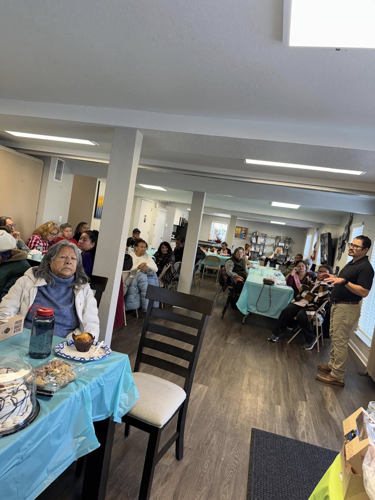

Nuestra investigación explora cómo las barreras del idioma, el estrés por aculturación y los desafíos sistémicos pueden influir en la salud y el bienestar de las comunidades latinas.
Buscamos comprender mejor las experiencias de las poblaciones inmigrantes y latinas, incluyendo cómo la adaptación cultural, las barreras de comunicación y el acceso a recursos influyen en los resultados de salud.
A través de investigaciones centradas en la comunidad, buscamos identificar barreras, destacar las experiencias vividas y generar evidencia que apoye iniciativas de salud pública culturalmente relevantes.
Nuestro objetivo es transformar los hallazgos de investigación en recomendaciones significativas que fortalezcan la abogacía comunitaria, orienten nuestros programas y promuevan la equidad en salud.

Colabora con nosotros, participa en una iniciativa o ayúdanos a construir una Aurora más saludable.
Participa